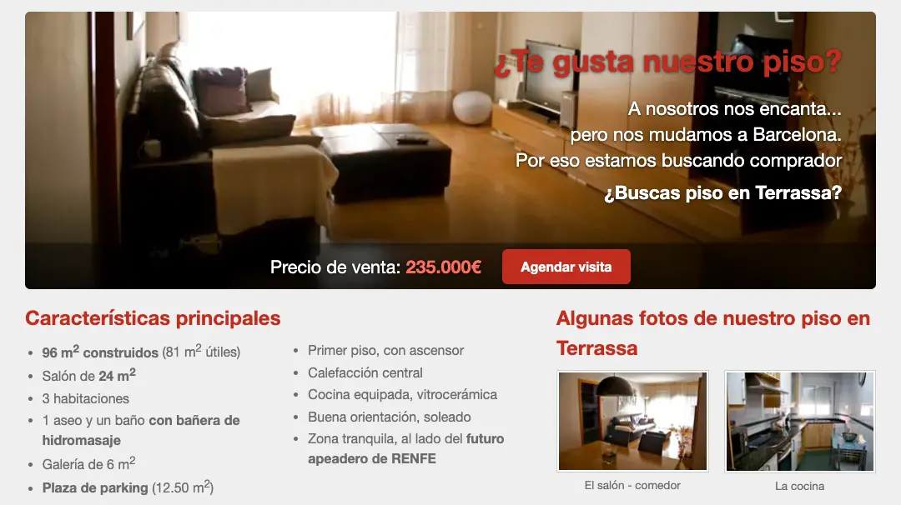
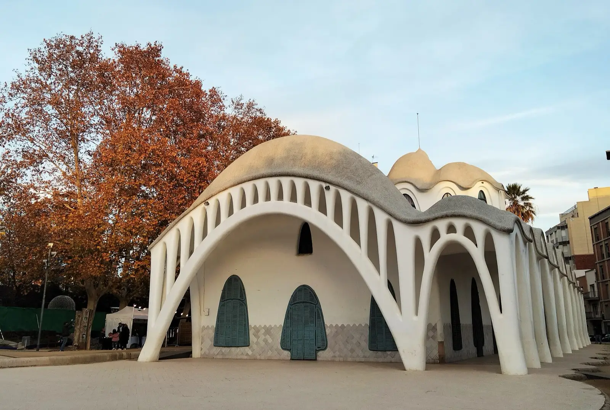
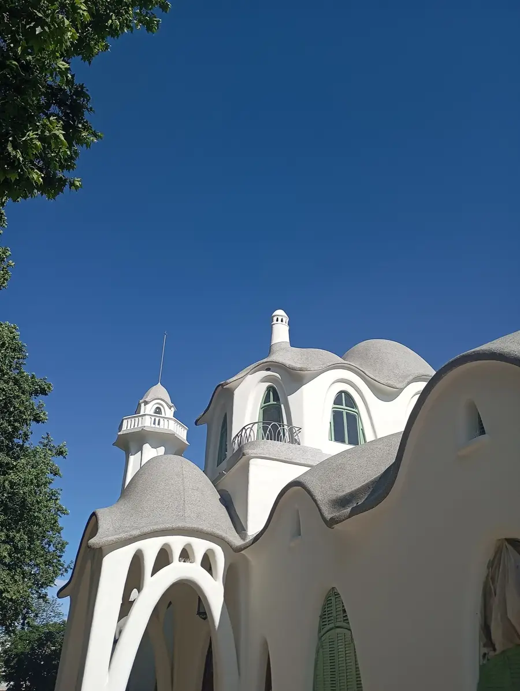
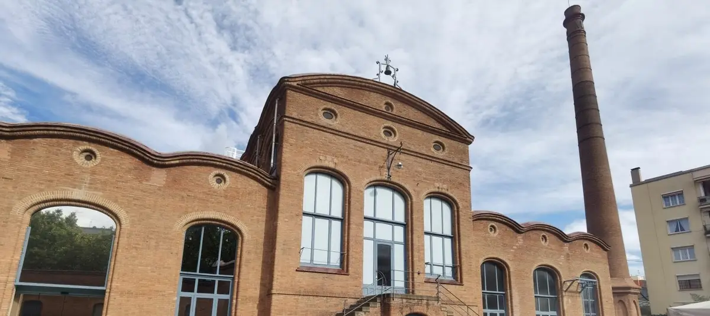

Nuestro piso en Terrassa ya está vendido.
Ahora se vende su dominio.
Un nombre que se entiende a la primera, en un cartel o de viva voz. Le puede sacar partido una inmobiliaria, un propietario que quiera vender o cualquier proyecto de vivienda en la ciudad.
Cómo acabó nuestra historia
Este dominio existe desde diciembre de 2009. Cuando nos mudamos a Barcelona, lo usamos para una web de nuestro piso, con fotos, vídeo y mapa. Al final, lo ha comprado una pareja en una situación muy parecida a la nuestra cuando lo compramos. Esperamos que lo disfrute tanto como nosotros.
Al dominio le deseamos un final igual de bueno.

La ficha del inmueble
| Superficie | 14 letras más .com |
|---|---|
| Antigüedad | Desde diciembre de 2009 |
| Orientación | A quien busca piso en Terrassa |
| Estado | Vacío y listo para entrar |
| Gastos de comunidad | Solo la renovación anual |
| Disponibilidad | Inmediata |
| Precio | 1.000 € o mejor oferta |
Quién debería entrar a vivir
Una inmobiliaria de Terrassa
Para una campaña de captación de pisos o para apuntarlo a tu web actual. Una sola venta de un piso de 170.000 € deja bastante más de lo que cuesta este dominio.
Un propietario que quiere vender su piso
Es lo que hicimos nosotros: una web con fotos, vídeo y mapa del piso, con una dirección fácil de dar a quien pregunta.
Un proyecto local
Una promotora de obra nueva, un gestor de alquileres o un portal de barrio pueden empezar con un nombre que ya explica lo que hacen.
Lo que la gente busca cada mes
Quien quiere comprar en Terrassa lo busca con estas palabras. Son las búsquedas mensuales que estima Ahrefs en España.
Datos de Ahrefs para España, noviembre de 2026.
Hay sitio junto a los grandes
La primera página de «pisos en terrassa» tiene a idealista, habitaclia y fotocasa, pero también webs locales con una autoridad de solo 5, 14 o 20 sobre 100, según Ahrefs.
Lo que te llevas
El nombre, listo para usar. Puedes apuntarlo a tu web desde el primer día o construir en él una página para captar pisos: lo que consiga dependerá de lo que hagas con él.
Precios y barrios de Terrassa: guía 2026
Lo que conviene saber antes de comprar o vender, con fuentes. Para ver anuncios, los portales con más oferta son idealista, habitaclia y fotocasa.
¿Cuánto cuesta un piso en Terrassa?
Es lo que se firma en escritura, según Housfy. En los anuncios se piden 2.390 €/m². En un piso de 80 m², son unos 169.000 € frente a 191.000 €.
Del anuncio a la escritura hay unos 280 €/m² de diferencia: es el margen que conviene tener en cuenta al negociar. Según Tinsa, el valor de tasación ha subido un 7,5 % en el último año.
Precio del m² en Terrassa, del anuncio a la escritura
¿Cuánto hay que tener ahorrado para comprar?
Es lo mínimo para un piso de 169.000 €: un 20 % de entrada y un 10 % de impuesto, sin contar notaría, registro y gestoría.
Los bancos suelen financiar hasta el 80 %. El impuesto (ITP) es del 10 % en Catalunya, o del 5 % si tienes 35 años o menos, es tu vivienda habitual y tu base imposable no supera los 36.000 €, según la Agència Tributària de Catalunya.
¿Cuál es el mejor barrio para vivir en Terrassa?
Depende del presupuesto y de lo cerca que quieras tener el centro o el tren. Centre y Les Fonts son los distritos más caros, casi empatados, y Sud es el más asequible.
¿Qué barrios tiene Terrassa?
Se organiza en siete distritos. Aquí tienes sus barrios y el precio del m² de cada uno, según Fotocasa (octubre de 2026).
- Centre
- Les Fonts
- Nord-oest
- Ponent
- Llevant
- Nord-est
- Sud

Vivir, moverse y alquilar
¿Cuánto se tarda de Terrassa a Barcelona?
Es lo que tarda la línea S1 de FGC hasta Plaça de Catalunya.
En Terrassa, la S1 para en Les Fonts, Rambla, Vallparadís Universitat, Estació del Nord y Nacions Unides. En Estació del Nord se enlaza con la R4 de Rodalies. Horarios en FGC.
¿Cuánto cuesta alquilar en Terrassa?
Es el alquiler medio del segundo trimestre de 2026, según los datos de la Generalitat de Catalunya.
Terrassa se declaró zona de mercado residencial tensionado en 2024. Si compras para alquilar, consulta el índice de referencia antes de fijar la renta.
¿Cuánto cobra una inmobiliaria en Terrassa?
Es la comisión de venta habitual, según Trustlocal. En un piso de 169.000 €, entre 5.000 y 11.800 €.
En alquiler, lo habitual es una mensualidad.
¿Qué hace falta para vender un piso en Terrassa?
En Catalunya necesitas cédula de habitabilidad y certificado energético, además de la documentación habitual.
- Escritura y nota simple del Registro
- Último recibo del IBI
- Certificado de la comunidad, al corriente de pago
- Inspección técnica del edificio, si le corresponde
- Certificado de la hipoteca, si queda deuda
Después de la venta, llegan la plusvalía municipal y el IRPF. Según idealista, los gastos de vender suelen sumar entre un 5 % y un 15 % del precio. Documentación según Housfy.
¿Cuántos habitantes tiene Terrassa?
Es la población en 2025, según el INE.
Su pasado textil se ve en las calles: el Vapor Aymerich, una antigua fábrica, es hoy la sede del Museu de la Ciència i de la Tècnica de Catalunya. También tiene modernismo, como la Masia Freixa, y un conjunto histórico en la Seu d'Ègara.


¿Te lo quedas?
o tu mejor oferta
Hacer una ofertahola@pisoenterrassa.com. També en català.
- Nos escribes con tu oferta. Una línea basta.
- Acordamos el precio por correo, sin vueltas.
- Pagas con un servicio de depósito, como Escrow.com, para que nadie corra riesgos.
- Te transferimos el dominio a tu registrador y se libera el pago.
El dominio está registrado hasta el 15 de febrero de 2027.